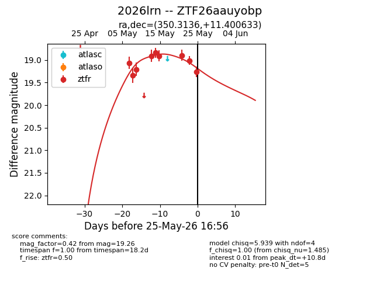
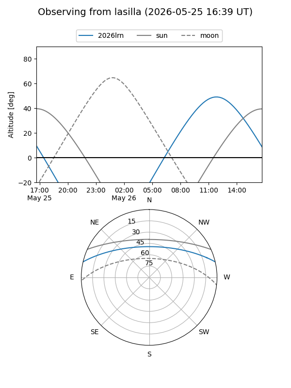
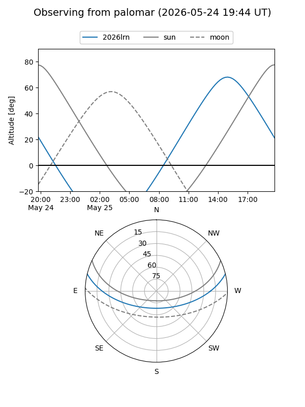
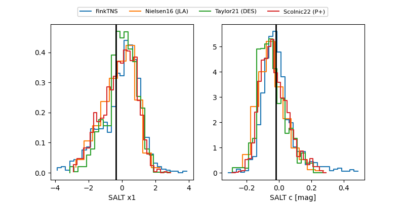

2026lrn
Target 2026lrn at 2026-05-25 16:58
Aliases and brokers:
lsst-FINK: link
lsst-Lasair: link
lsst-ALeRCE: link
ztf-FINK: link
ztf-Lasair: link
ztf-ALeRCE: link
TNS: link
YSE: link
alt names
ZTF26aauyobp (ztf,fink_ztf)
2026lrn (tns,yse)
Coordinates:
equatorial (ra, dec) = 350.3136,+11.40063
equatorial (HMS+DMS) = 23:21:15.26,+11:24:02.28
galactic (l, b) = (90.3777,-45.69379)
Flags:
Photometry:
last ztfr=19.26
9 ztfr detections
Lightcurve

Visibility


Additional plots
